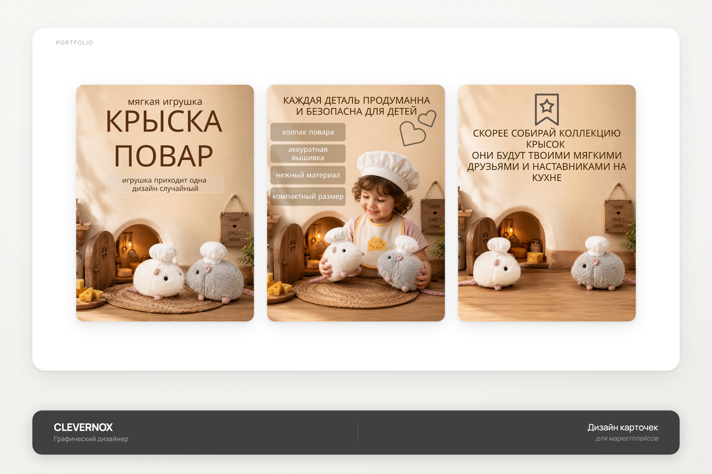
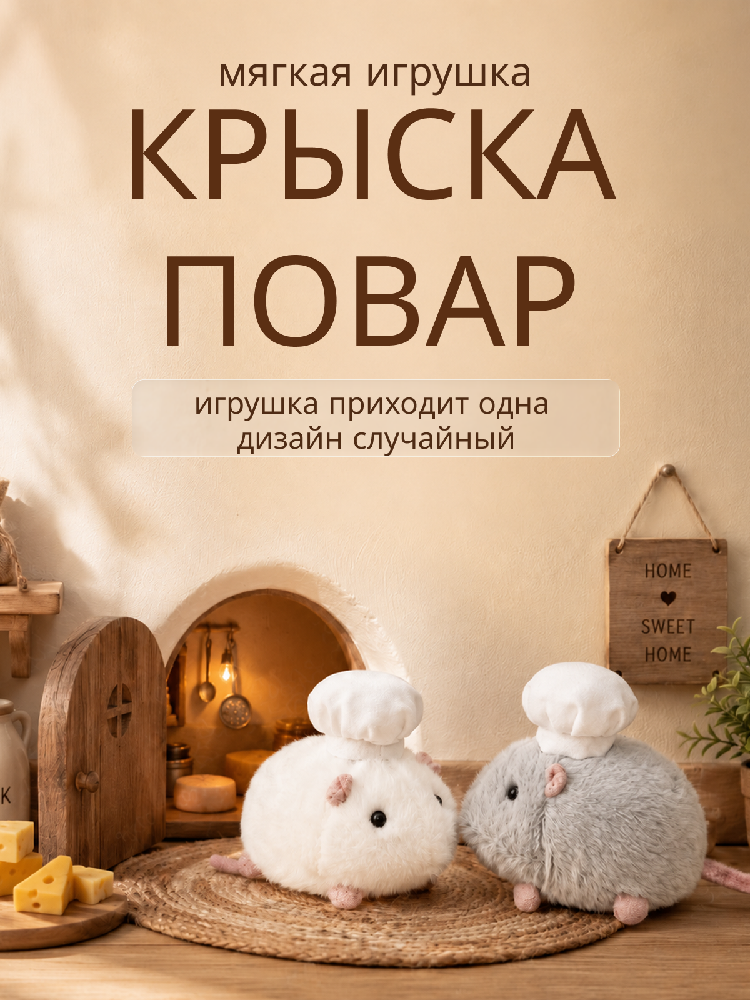
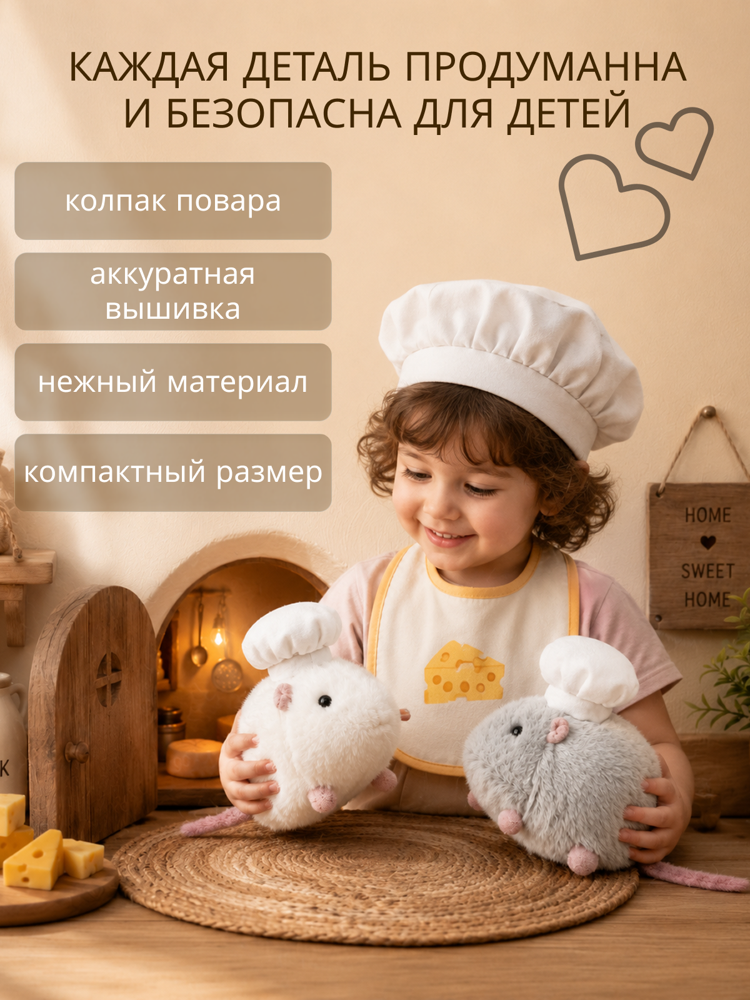
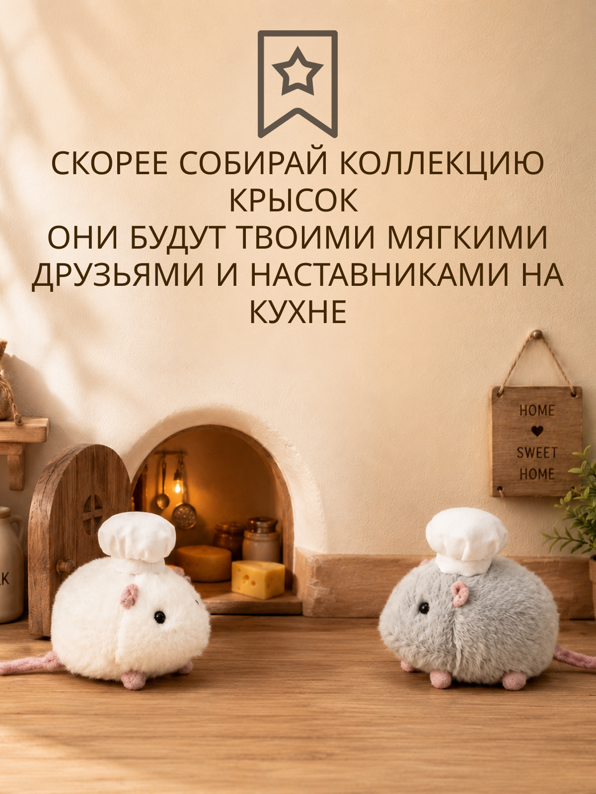

Крыска-повар
Серия инфографических карточек для мягкой игрушки «Крыска-повар»: атмосферная сценография, детали и эмоциональный призыв к коллекционированию.

- Клиент
- Производитель мягких игрушек
- Задача
- Разработать серию карточек товара для маркетплейса под коллекционную мягкую игрушку «Крыска-повар»: главный слайд, преимущества и детская безопасность, эмоциональный призыв собрать коллекцию — в единой уютной сценографии.
- Роль
- Графический дизайнер: концепция серии, инфографика, типографика, работа с предметной и лайфстайл-съёмкой в декорации, подготовка под формат карточек маркетплейса.
Игрушка живёт в детской нише, где решает не рациональная характеристика, а атмосфера — поэтому вместо стерильного предметного фото в основу легла built-сценография: тёплая кухня-нора с дверцей, вывеской «Home Sweet Home» и кусочками сыра. Эта декорация — не фон, а часть истории персонажа, и она держит все три карточки как одну сцену, снятую с разных точек и в разное время дня.
Первая карточка знакомит с персонажем и сразу закрывает ожидание по комплектации («игрушка приходит одна, дизайн случайный») — честно и без завышенных ожиданий, чтобы не было возвратов. Вторая через фото с ребёнком отрабатывает главный страх покупателя мягких игрушек — безопасность материалов и качество пошива. Третья работает на повторные покупки — подсказывает, что крысок несколько и их можно собирать, оставаясь в той же декорации, но уже без персонажей в кадре с людьми, ближе к «фирменному» пейзажу истории.



Серия карточек закрепила образ персонажа как часть уютной истории, закрыла вопрос по комплектации и безопасности материалов, а также подтолкнула к покупке нескольких игрушек в коллекцию.